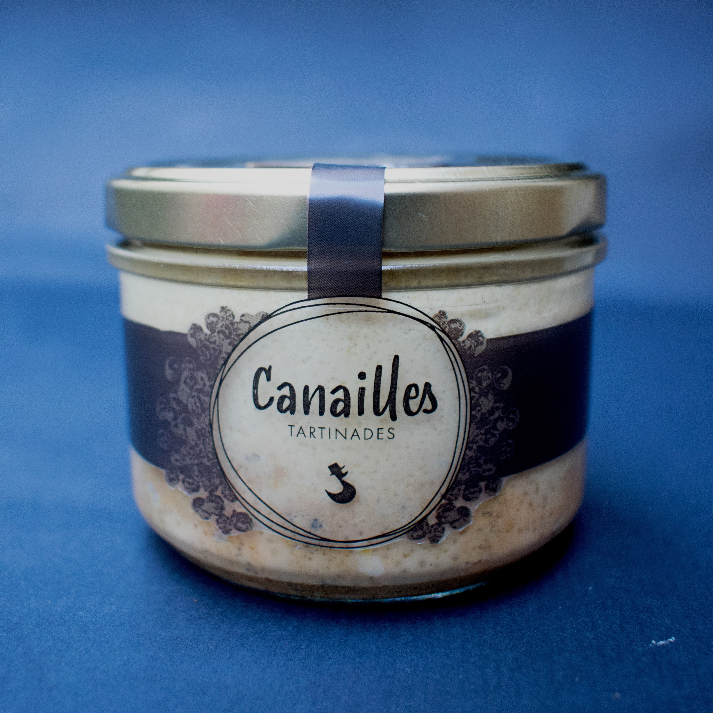
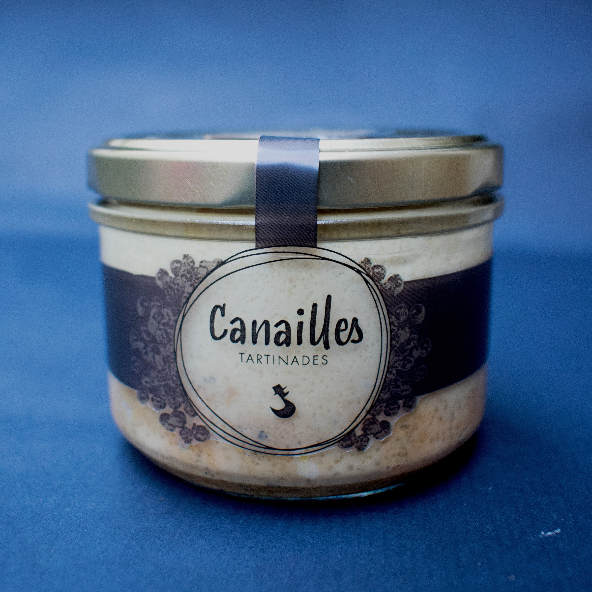

Octopus


Identité visuelle _
1e année DSAA Design Graphique
Conception de l'identité visuelle de l'EP Aurore de la musicienne Tania Bel, claviériste produisant du synté pop dreamy et contemplative.
Format : Numérique (communication virtuelle) & Édition (CD / Affiches)
Outils : Blender / Photoshop / InDesign / Pâte Fimo


Canailles


 


Identitée visuelle _
2e année BTS Design Graphique
Recherche d'image de marque pour la nouvelle gamme de tartinade des "fins gourmets".